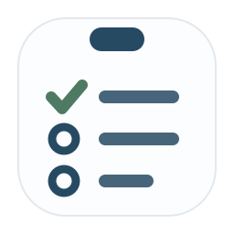
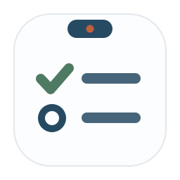

TaskList · 白底铺满版（白纸即图标 + 靛青夹头 + 清单）
整个 logo 是白纸铺满，顶部靛青夹头，纸上竹青对勾+靛青待办条。含浅色/深色背景验证（白底图标在深色任务栏上很跳，浅色上有细描边不糊）。
W1 · 清单三行
白纸铺满 + 靛青夹头 + 三行清单（竹青勾+两条待办）。清爽、像提醒事项。

浅色背景
深色任务栏
任务清单
W2 · 清单两行（更简洁）
两行更大更透气，夹头带一点朱做夹扣点睛（克制）。最简洁大气。

浅色背景
深色任务栏
任务清单